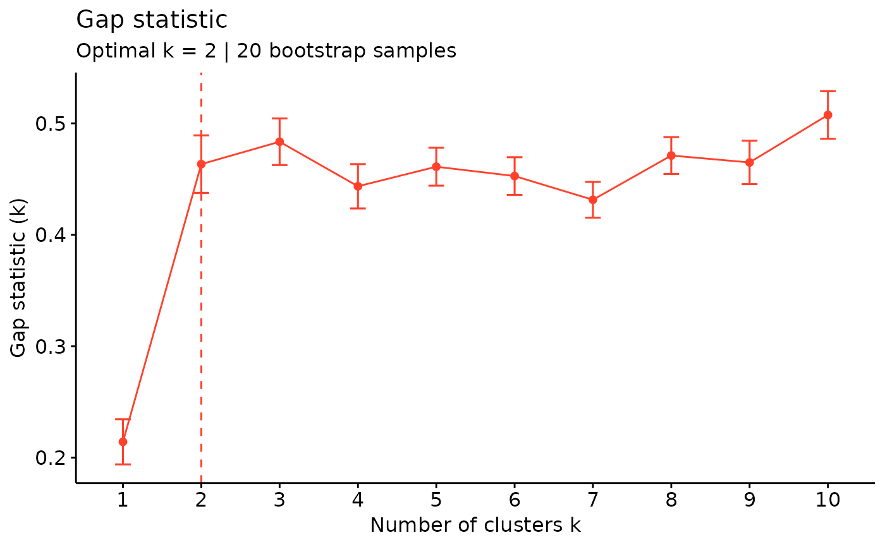

Computes the gap statistic for 1 to k_max clusters using
cluster::clusGap() and plots it with factoextra::fviz_gap_stat(). The
gap statistic compares the within-cluster dispersion of the data with the
one expected under a reference distribution without clusters.
Usage
seg_nbclust_gap(
x,
cluster_method = c("kmeans", "hclust", "pam"),
k_max = 10,
nboot = 50,
nstart = 10,
hc_method = "ward.D2",
seed = 123
)Arguments
- x
The output of
seg_prep_data()(recommended), or a data frame or numeric matrix with already prepared clustering variables (no missing values).- cluster_method
Clustering algorithm used to evaluate the solutions:
"kmeans"(default,stats::kmeans()),"hclust"(hierarchical clustering viafactoextra::hcut()) or"pam"(partitioning around medoids,cluster::pam()). k-means always uses Euclidean distances. NbClust does not support"pam"and is skipped in that case.- k_max
Maximum number of clusters to consider. Defaults to 10.
- nboot
Number of bootstrap samples for the gap statistic. Defaults to 50 (factoextra uses 100), which keeps the computation time moderate.
- nstart
Number of random starts for k-means. Defaults to 10 (lower than for the other methods to keep the computation time moderate).
- hc_method
Agglomeration method for
cluster_method = "hclust". Defaults to"ward.D2".- seed
Random seed. The global random seed is left untouched. Defaults to 123.
Value
A list with the elements method, optimal_k, criterion,
values (tibble with the gap statistic and its standard error per k),
plot (ggplot object) and gap (the cluster::clusGap() output).
Details
How it works
For each k, the data is clustered and the (pooled) within-cluster
dispersion \(W_k\) is computed. The same is done for nboot reference
datasets without cluster structure, generated uniformly within the range of
the data (along its principal components). The gap statistic is the
difference between the expected and the observed log dispersion:
$$Gap(k) = E^*[\log W_k] - \log W_k$$
where \(E^*\) is the average over the reference datasets. Its standard
error \(s_k\) is derived from the standard deviation of the reference
values. A large gap means that the clustering structure is far from what is
expected for random data.
The optimal k is the smallest k whose gap is within one standard error of
the first local maximum (method = "firstSEmax" in cluster::maxSE(),
also used for the plot). In contrast to the silhouette method, the gap
statistic can also suggest k = 1, i.e. that the data has no cluster
structure.
Interpretation
A clear peak indicates a natural number of clusters.
A curve that keeps increasing (common for survey data with many variables) indicates that more clusters always fit better than random data; the suggested k then marks where the curve flattens and is often large. Treat it as an upper bound rather than a recommendation.
The result depends on the random reference datasets; with few bootstrap samples (
nboot), the standard errors are larger.
The gap statistic is the most time-consuming method, as the clustering is
repeated nboot + 1 times for each k. Note that cluster::clusGap()
always uses Euclidean distances.
References
Tibshirani, R., Walther, G. and Hastie, T. (2001). Estimating the number of clusters in a data set via the gap statistic. Journal of the Royal Statistical Society: Series B, 63(2), 411-423. doi:10.1111/1467-9868.00293
See also
Other optimal number of clusters:
seg_nbclust_indices(),
seg_nbclust_silhouette(),
seg_nbclust_wss()
Examples
# \donttest{
prep <- seg_prep_data(iris, vars = -Species, verbose = FALSE)
seg_nbclust_gap(prep, nboot = 20)$plot

# }